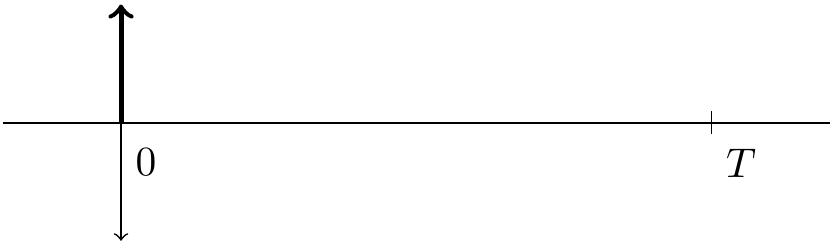
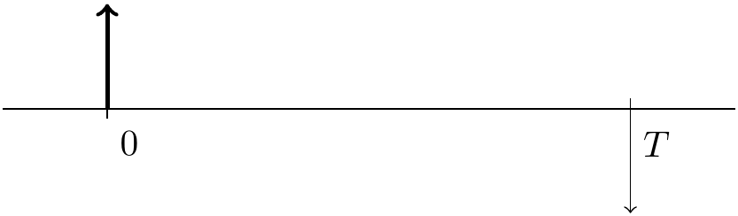
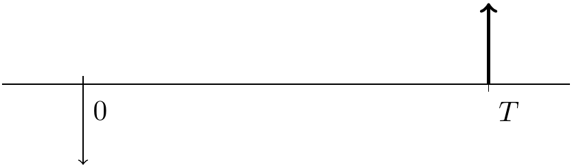
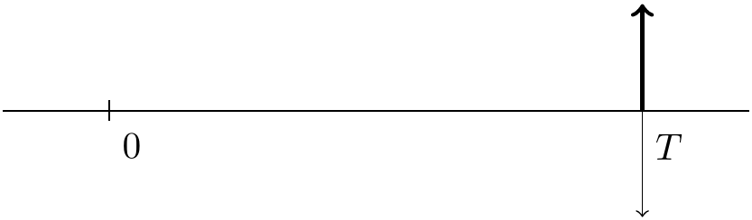

1 Financial Transctions
1.1 거래(계약)라는 것은 무엇일까?
가장 이해하기 쉬운 형태는 사다와 팔다일 것이다. 하지만 사다와 팔다를 다른 관점으로 바라보면, 주다(pay)와 받다(receive)로 해석할 수 있다.
Example 1.1
여기서 apple은 먹는 사과를 생각해도 되고, 애플 주식으로 생각해도 됩니다.
1000원을 주고 apple을 사다.
1000원을 받고 apple을 팔다.
1000을 pay하고 apple을 receive하다
1000을 receive하고 apple을 pay하다
1.2 4가지의 서로 다른 거래
pay와 receive를 시간과 함께 그려보겠습니다. \(y\) 축 방향으로의 굵은 선은 apple, 보통 굵기의 선이 돈이고, 플러스 방향을 receive, 마이너스 방향을 pay로 생각하겠습니다. \(x\)축은 시간을 표시 합니다. \(t=0\)과 \(t=T\)이 있습니다. \(T\)는 우리가 지정한 특정 시점을 의미합니다. 1년 후로 생각해도 되고, 1개월 후로 생각해도 됩니다. \(0\)은 현재 시점입니다.




하나씩 살펴보겠습니다.